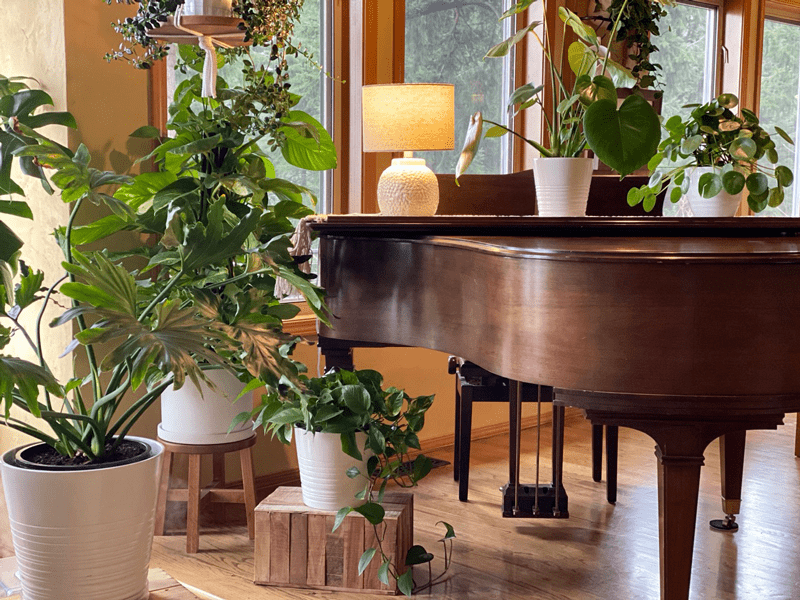
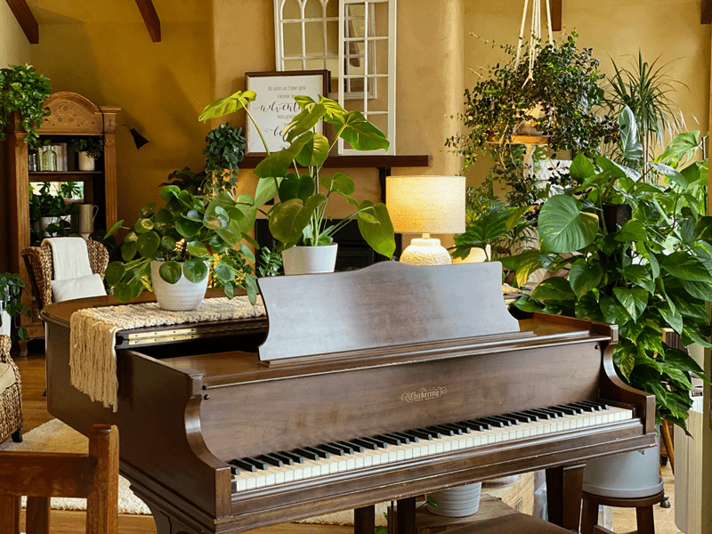
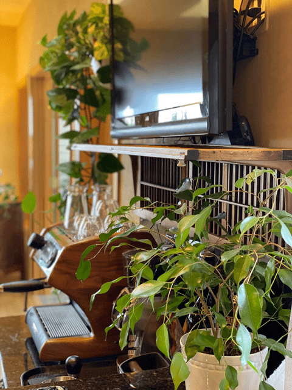
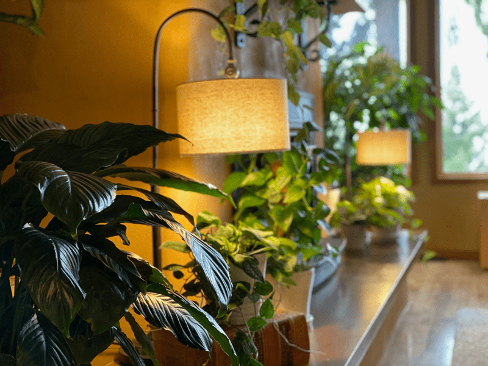
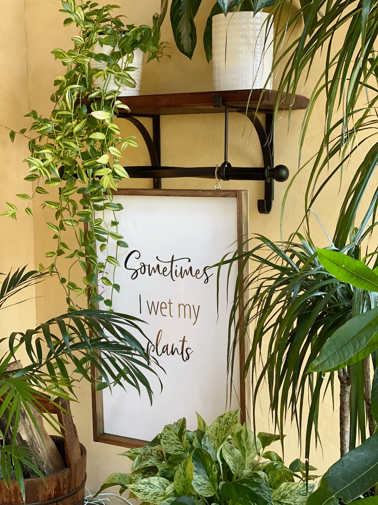
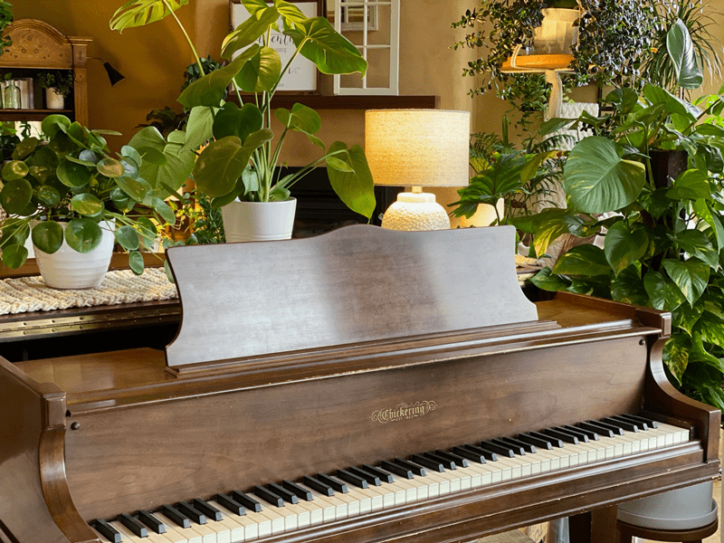
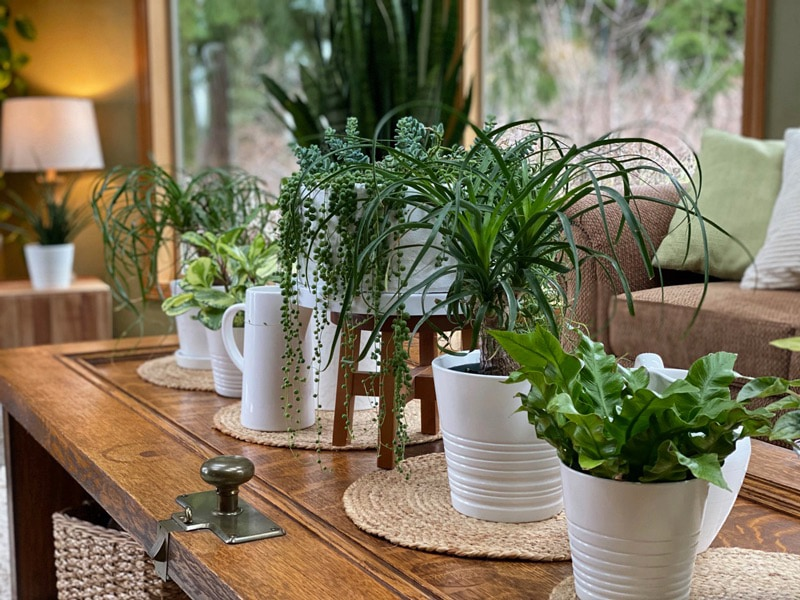
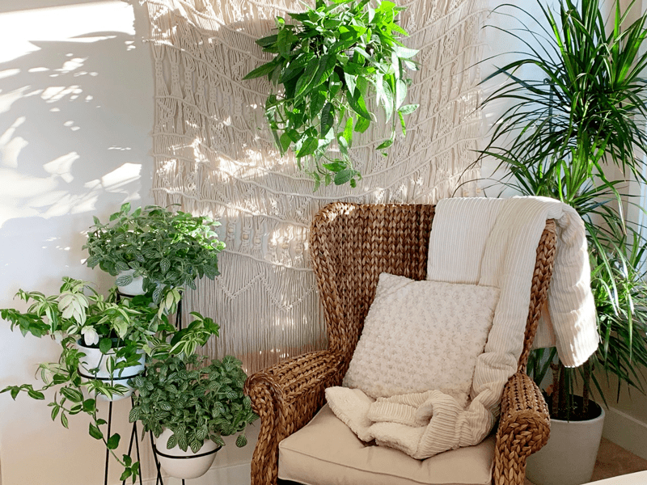

Why and How I Got into Houseplants
Interior design has been a passion of mine ever since I can remember, long before recipe designing. As a little girl, nothing brought me as much joy as rearranging and designing the layout of my bedroom–except maybe making mud pies in the garden. So, as an adult, I decided to expand my passions and try my hand at interior landscaping!

I think it’s important to say that I don’t have decades of experience with REAL indoor plants. Frankly, artificial ones were my go-to. In my mid-twenties, I did give it a go with real plants. I brought home a bunch of four-inch potted plants, mostly aloe vera plants. In one night, my cat ate the aloe plants, and within a few weeks, I had killed the remaining ones. It was then that I decided I had a “black thumb.” Shame on me for doing that! That label held me back from ever bringing home another plant. It is so important to watch the words we choose, not only when talking to other people but to ourselves as well!

Fast forward: A few years ago, I started to introduce the color green into my decor. Green wasn’t a typical color that I turned to; red had always been my color, and no matter how much I tried to deviate from it, I always went back to red. But soon after bringing green accents into my decor, I found that I CRAVED the color green. This bewildered me. Finally, one day, I reached out to my Facebook group and asked them if anyone knew the significance of the color green.

I learned that it represents the heart chakra, which deals with love and relationships, and represents the energy center for an individual’s happiness and feelings of compassion. Green is the color of growth, life, and balance. Through balance, you find the center from which you can love, form healthy and nourishing relationships, and give and receive love. After learning this, it settled in my heart… green is my new red. The definition of green expressed my life and everything I desired.

For years, I used artificial green plants to infuse the color green into our decor. Bob and I used to travel a lot more than we do now, so having real plants was just too challenging. Plus, I was haunted by that lingering “belief” that I could not grow real plants.
Besides those reasons, artificial plants fit in with my type-A personality. I could control the quality, color, shape, and size of the plant.
Then one day, out of nowhere, I fell in love with real indoor house plants?! What in tarnation? I have no idea how or why it happened, but it did. It literally happened overnight.
I have learned something about myself over the years: When I have a passion for doing something, it is just best to get out of the way because I become a force to be reckoned with. (Bob can back me up on that one.)
My indoor jungle started with ONE plant. I brought it home, set it on the counter, and stared at it. Now what? I had no clue. Soon I found myself reading anything I could get my hands or eyes on about indoor houseplants.
When I find interest in something, I research until I am blue in the face–or in this case, green in the face! From that point on, every plant I saw, I spouted off its name and the environment that it likes. As the words left my mouth, I would think, “Who are you, and where is Amie Sue?” It is mind-boggling to me that I was retaining all the information I was acquiring; this was a clear sign that I was on the right path, and I needed to pay attention to what the universe was telling me.

One plant turned into ten, then thirty, then…well, I refuse to count. If I do, I might overwhelm myself. Let’s just say that a good portion of the house is like living in the great outdoors. I was afraid that I would freak Bob out with my new plant love, but instead, he embraced it, he encouraged it, and he loved it! (all present tense as well) Shew! When I decorate, I always keep Bob in mind. I decorate with a balance of feminine and masculine energy. I want Bob to feel just as comfortable in our house as I do.

As of now, I have plants in our main living room, dining room, kitchen, sunroom, master bedroom, and my studio (read about that here). I don’t want my plants to spread to any other rooms in the house due to the amount of time and energy it takes to tend to the ones I already have.
I tried putting a single plant here and there throughout other rooms, but I found that it was too easy to forget about them. So, if you plan on decorating with plants, know your limits. If you extend beyond them, everyone suffers.
So, that’s a snippet of the back history of how I filled our house with plants. And to be honest, my love for plants has outweighed my love for some other objects and even furniture pieces. Bob and I went through the house and purged!
We aren’t hoarders or even collectors of things, but we had STUFF! The more we removed stuff and created empty spaces, the more we craved it. It’s a natural instinct to replace things, to fill space back up, but we have resisted and gosh, does it feel amazing. I did, however, use plants in place of objects, which opened up a whole new way of decorating.
When people walk into our house, I get memorable responses. Our friend Pauleena said, “Your house feels like a warm hug.” Michael said, “What the??? This is amazing. I love it.” His words took as long to say as it did to take in all the plants, so add a long, long Southern drawl to that. Now when he comes over to visit, he says, “I couldn’t wait to come to visit my spa.”
I often hear, “Oh my, your house is right out of Pinterest!” I am going to take that as a compliment–not that I copy other people’s work or styles! In the end, the goal for our home is to create a space of warmth, peace, love, and relaxation, not just for us but for all who enter. I hope you enjoyed the photos I shared.

Bob said that he loves to play the piano while surrounded by a jungle. I am happy to create such a space for him.


This coffee table in our sunroom is made from a 1931 Portland bank door. What better display than plants?!

One wall in our bedroom.
-

-
My Living Wall (displays 25 plants in one grouping).
-

© AmieSue.com